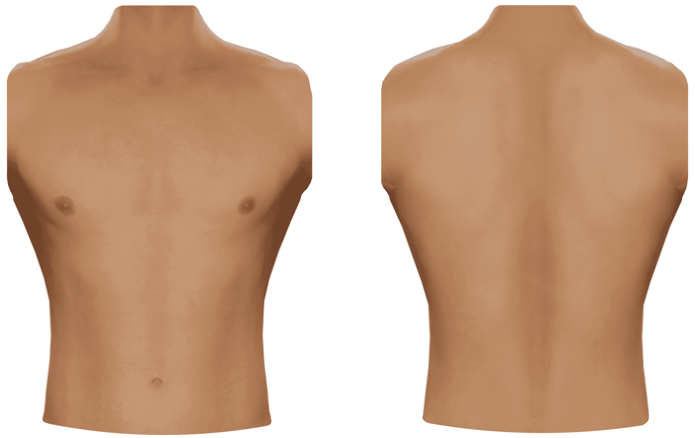

Simulador Eugenio
Desconectado

Selecciona una patologia para el simulador
Normal Heart Sounds
Aortic Regurgitation
Aortic Stenosis
Atrial Septal Defect
Coarctation of the Aorta
Congestive Heart Failure
Hypertrophic Cardiomyopathy
Innocent Systolic Murmur
Minor Cardiomyopathy
Mitral Regurgitation
Mitral Steniosis
Mitral Valve Prolapse
Pericarditis
Perimembranous Ventricular Septal Defect
Pulmonary Stenosis
Ventricular Septal Defect
Mitral valve steniosis